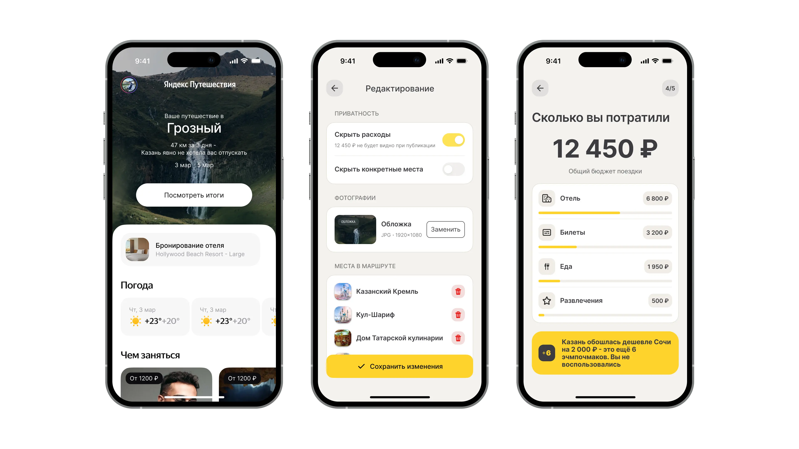
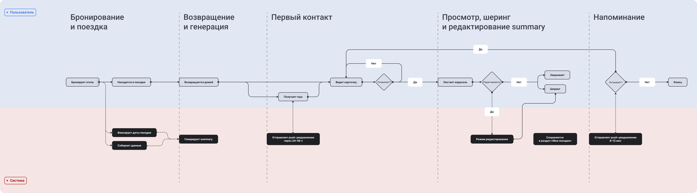

Travel Summary
Концептуальная фича для Яндекс Путешествий. Персонализированный итог поездки появляется через 24–48 часов после возвращения и мотивирует поделиться впечатлениями. Спроектировал с нуля: от исследования до UI.
Смотреть прототип в Figma →
Обзор
Яндекс Путешествия хорошо закрывают фазу до поездки, но после возвращения у пользователя нет причины открывать приложение. Раздел «Мои поездки» работает как архив бронирований, без механики возврата. Travel Summary даёт повод вернуться, пока впечатления от поездки ещё свежие.
Открыть обзор →Аудитория
Активные шерящие
~30% выборкиПубликуют контент о поездках по привычке. Хотят story-формат с минимальной редактурой.
БарьерНе сам факт публикации, а её качество. Конвертируются легче всего.
Закрытые, но восприимчивые
~50% выборки · главная ставкаНе публикуют в открытые соцсети, но готовы поделиться в личных чатах при правильном формате.
СтавкаСамый большой сегмент. Единственный мост: юмор и неожиданные факты.
Функциональные
~20% выборкиДеловые поездки. Эмоциональная подача вторична: ценят утилитарность и структурированную статистику.
РольНе двигают метрику шеринга, но работают на DAU через архив и сравнение поездок.
Ключевые метрики MVP
| Метрика | Цель | Почему |
|---|---|---|
| Доля шеринга от DAU фичи | 28–32% | Сейчас 19% публикуют контент о поездках: фича должна снять барьер |
| Генерация summary | > 85% | Достаточно данных для генерации у большинства пользователей |
| Просмотр карусели | > 95% | Из тех, кто получил summary: открывают карусель |
| Редактирование | > 50% | 89% назвали edit важным или критичным перед публикацией |
| Рост Retention (Day 30) | +4 pp | Базовое значение для travel-категории: 2,8% |
| CSI | > 8/10 | Низкий CSI покажет, что пользователь воспринимает фичу как утилитарную, а не эмоциональную. |
Исследование
6 глубинных интервью и опрос 27 респондентов. Смотрел на барьеры к шерингу: почему люди не публикуют контент о поездках даже при позитивных впечатлениях.
Открыть исследование →Бенчмаркинг
Разобрал пять продуктов с механикой персонального recap: Spotify Wrapped, Apple Music Replay, Strava, Polarsteps и Booking.com. Смотрел на story-формат, тайминг показа и шеринг-механики.
Открыть бенчмаркинг →Приоритизация гипотез
После интервью было пять гипотез: нужно было решить, в каком порядке проверять количественно. Использовал ICE: Impact × Confidence × Ease.
| Гипотеза | ICE | Приоритет |
|---|---|---|
| Редактирование: обязательное условие шеринга | 900 | Must |
| Социальный барьер блокирует шеринг даже при хорошем контенте | 810 | Must |
| Детализация данных: основа персонализации | 648 | Should |
| Оптимальный момент показа: первые 48 часов после поездки | 384 | Nice |
| Пользователи с 2+ поездками ценят summary выше | 315 | Nice |
User Flow
Полный жизненный цикл Travel Summary: от момента бронирования до повторного возврата. Три дорожки: пользователь, система, трекинг. Шесть фаз.

Открыть User Flow →Дизайн
User flow (swim-lanes, 6 фаз), UI kit на базе дизайн-системы Яндекс Путешествий и 10+ экранов с аннотациями, привязанными к данным исследования.
Валидация
Спланировал 3 задачных сценария с 6 респондентами (по 2 на каждый сегмент). Тестирую персонализацию, edit-флоу и конверсию в шеринг. Метрика качества: SUS ≥ 70.
Открыть план →План измерений
Конверсионная воронка из 4 этапов, события трекинга и три фазы A/B тестов. Ключевая метрика нормируется на DAU фичи, а не на DAU приложения.
Открыть план измерений →Следующие шаги
До релиза: расширение опроса и engineering assessment. MVP запускается в четыре фазы от 5% до 100%. Дальше: сравнение поездок, Annual Travel Wrapped и интеграция с Яндекс Картами.
Открыть →